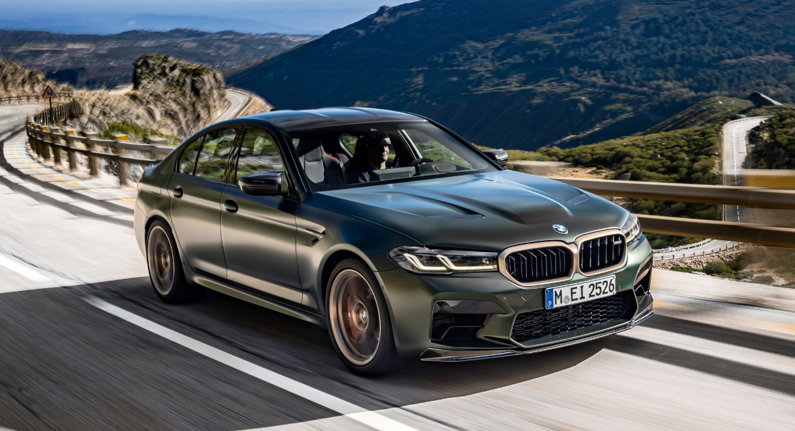
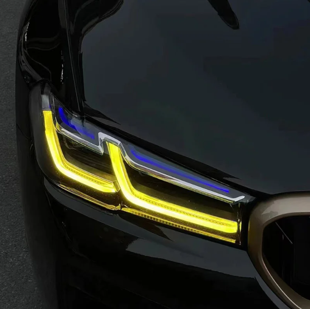
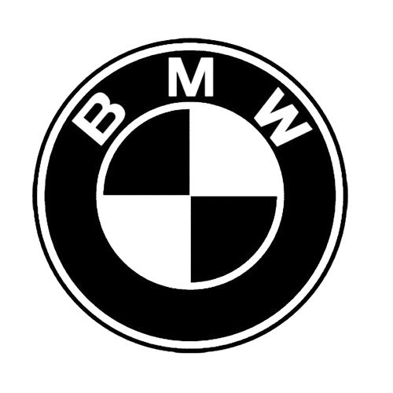

Welcome to My Website
M5 CS ,The standard version makes 473 horsepower and 406 lb-ft of torque. It pairs with rear-wheel drive and a six-speed manual transmission. The Competition model generates 503 horsepower and 479 lb-ft, but the lone transmission choice is an eight-speed automatic.
M5 CS, The M5 CS isn’t just marginally lighter than an M5 Competition. Its 230-lb diet is significant. This is mainly due to the extensive use of carbon fiber reinforced plastic. Large items such as the hood, front splitter, rear diffuser, and roof feature the material utilizing a mixture of the body color and unpainted carbon fiber. Alone the changes are small, but together they add up to significant weight savings.
 The Otto Flugmaschinenfabrik was founded in 1910 by Gustav Otto in the Kingdom of Bavaria, which was a state of the German Empire. The firm was reorganized on 7 March 1916 into Bayerische Flugzeugwerke AG. This company was then renamed to Bayerische Motoren Werke (BMW) in 1922. However, the name BMW dates back to 1913, when a company to use the name was founded by Karl Rapp initially as Rapp Motorenwerke. The name and Rapp Motorenwerke's engine-production assets were transferred to Bayerische Flugzeugwerke in 1922, who adopted the name the same year. BMW's first product was produced for fighter aircraft of the Luftstreitkrafte. It was a straight-six aircraft engine called the BMW IIIa, designed in the spring of 1917 by engineer Max Friz.